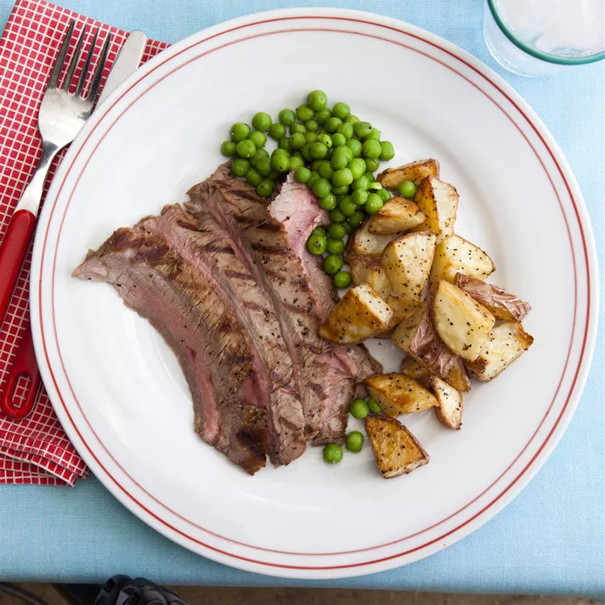

A great flank steak marinade like this one is important if you want a tender, juicy, flavorful steak.
Make sure you marinate your flank steak for at least 2 hours for best results or longer if you have time.
This wonderful quick and easy recipe also works great when the steak is sliced and used for fajitas.
Make the best steak of your life with this top-rated recipe.
A complex, savory flank steak marinade ensures perfectly tender and juicy beef every time.
Flank steak is a lean cut of beef that comes from the cow's lower abdominal muscles.
It's a relatively tough cut that's low in fat, which means a few things:
Flank steak doesn't need to be trimmed, it's inexpensive compared to other cuts, and it benefits greatly from marination.
There are plenty of ways to perfectly cook a flank steak. In this recipe, the steak is grilled — we love the bold, smoky flavor the grill gives the meat. But you can also easily cook your flank steak in the oven or on the stove. You'll find the step-by-step recipe for marinated and grilled flank steak below,but here are some rough guidelines for three different flank steak cooking methods:
On the grill: Season and marinate the steak according to your recipe.
Preheat a lightly oiled outdoor grill to medium-high heat.
Remove the steak from the marinade, shake off excess liquid, and grill on each side to desired doneness.
The steak is done when a meat thermometer inserted into the center reads between 130 degrees F and 145 degrees F.
In the oven: Season and marinate the steak according to your recipe.
Remove the steak from the marinade, shake off excess liquid, and arrange the steaks in a baking dish lined with aluminum foil.
Bake until a meat thermometer inserted into the center of the steak reads between 130 degrees F and 145 degrees F.
On the stove:Season and marinate the steak according to your recipe.
Sear the steaks in a cast-iron skillet until lightly browned on the bottom, then flip to the other side and repeat.
Finish the steaks in a preheated oven. Bake until a meat thermometer inserted into the center of the steak reads between 130 degrees F and 145 degrees F.